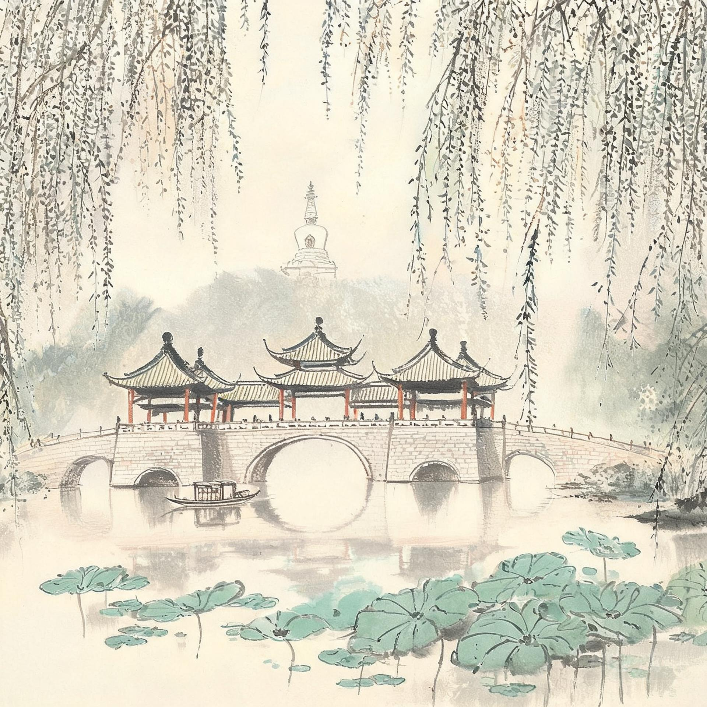
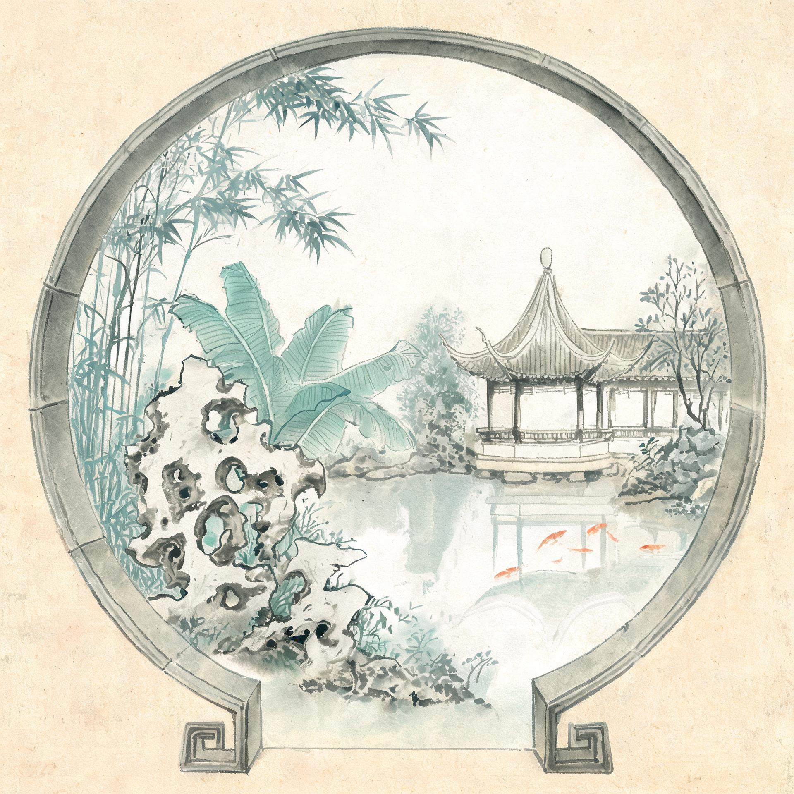
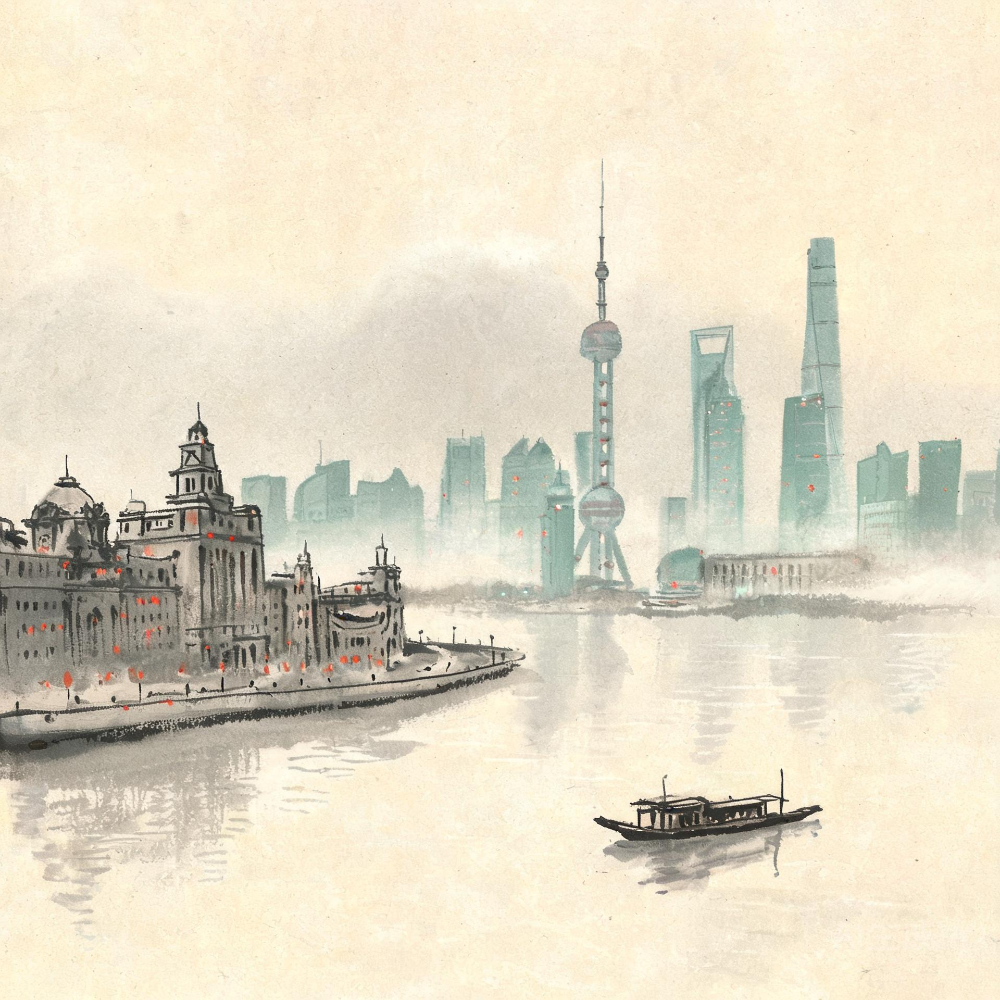

09.24
周四
上 午
北京正常上班上学，行李提前打包寄存。
下 午
下班直奔车站。19:10 软卧出发 ¥381.5×4≈1526
Z281 北京丰台 / D17 北京站，18:00 下班后地铁直驱，留足 70 分钟余量
晚 上
车上晚餐+洗漱入睡；包间关门即私家车厢，两娃下铺、大人上铺。
车上过夜软卧 4 铺包间 —— 全家独立空间，带娃过夜最优解
凌晨到站即开玩：玄武湖日出晨走、钟山民国线、南博民国馆；中秋夜湖畔赏月避开夫子庙人海。

全程景点步行圈：早茶、瘦西湖画舫、个园何园、古运河夜游——全落在周一至周三的客流低谷。

园林五连（拙政园/狮子林/虎丘/留园/艺圃）+ 西山太湖避峰，国庆顶流全部让给 10.1–10.4。

傍晚抵沪当晚看外滩，次日豫园+自然博物馆漫游整日，21:05 D10 动卧一夜还京。
上午主景点开门即入，下午次级景点或街区漫步，晚上坐船、夜景等低体力活动收尾。已删除无锡/拈花湾段（人造景观 + 国庆峰值房价 + 带娃赶路三重不划算），太湖山水由苏州西山补位。全程 13 天只换 4 次酒店，儿童 1.2 米以下多数景点免票、火车按年龄判定（未满 6 周岁免票不占铺）。
| 方案 | 车次 | 发车 | 抵达南京 | 票价（×4 大人） | 开售 |
|---|---|---|---|---|---|
| A 软卧（主） | Z281 北京丰台 / D17 北京站 | 均 19:10 | 次日 04:46–04:59 | 软卧 ¥381.5×4≈1526 动卧 ¥511×4≈2044 |
9.10 |
| B 高铁（保底） | 北京南 G 字头 | 7:00–8:30 | 当日 11:30 前后 | 二等座 ¥533×4≈2132 | 9.11 |
软卧包间正好装下全家：两娃未满 6 周岁免票不占铺、与大人同铺；若娃已满 6 岁需加购半价占铺票。A 方案到站即开玩（玄武湖日出晨走是全天唯一无人时段）；B 方案 9.25 中午到、下午改走玄武湖+台城，9.26 起两版本完全一致。A 落空则候补挂住 + 9.11 抢 B；A 后到则退 B（开车前 8 天以上免手续费）。[1][2]
| 优先级 | 车次 | 时刻 | 票价（×4 大人） | 开售 |
|---|---|---|---|---|
| 主 | D10 上海南 → 北京南 CR200J 复兴号，经停苏州、南京 |
21:05 → 次日 09:24 | 二等卧 ¥578×4≈2312 一等卧 ¥732×4≈2928（带娃优选） |
9.22 |
| 备 | 10.7 早班 G 沪 → 京南 G4 07:00→11:37 等同窗口班次 |
上午抵京 | 二等座 约¥600×4≈2400 | 9.23 |
10.6 全天上海漫游，20:00 地铁 1 号线 30 分钟直达上海南，车上睡一夜，10.7 早 09:24 抵北京南、中午前到家——比早班 G 多睡 3 小时。备用方案需保住 10.6 沪房：先订 1 间可免费取消的，D10 抢到即退。[1][3]
北京正常上班上学，行李提前打包寄存。
下班直奔车站。19:10 软卧出发 ¥381.5×4≈1526
Z281 北京丰台 / D17 北京站，18:00 下班后地铁直驱，留足 70 分钟余量
车上晚餐+洗漱入睡；包间关门即私家车厢，两娃下铺、大人上铺。
04:59 抵南京站，寄存行李后开玩：
玄武湖日出晨走 免费
南京站南广场出站即湖，日出时段只有晨练人，全天唯一无人时段
鸡鸣寺 ¥10（素面当早餐）
地铁 3 号线鸡鸣寺站
台城明城墙 ¥30（湖景城墙）
鸡鸣寺旁步行即达
午餐鸭血粉丝 约¥20/人
14:00 入住洗漱休整，老门东闲逛 免费
酒店夫子庙商圈，老门东地铁或步行可达
17:00 早晚餐 南京大牌档 约¥80/人（17 点前入座免排队）
湖畔/城墙边就近赏中秋月，约 20:00 回酒店早休，为次日钟山日留体力。
7:30 钟山民国线：明孝陵石象路 → 美龄宫 → 音乐台 → 中山陵（免费预约）
钟山联票 ¥100 + 美龄宫 ¥30
地铁 2 号线苜蓿园站 + 景区观光车；早到避开 10 点后人流
总统府 ¥35（14:30–16:30 紧凑两小时）
地铁 2 号线大行宫站
老门东晚餐 → 顺路秦淮河夜景散步 免费
住处即景区，累了随时撤，不看画舫不排队。
9:00 南京博物院 免费预约（重点民国馆：藏在博物馆里的沉浸式老街）
地铁 2 号线明故宫站，钟山脚下同板块
13:30 高铁南京南 → 扬州东 ¥74/人（59 分钟，车上补觉）
何园 ¥45（复道回廊「晚清第一园」）
扬州东打车 20 分钟约 ¥25；酒店东关街，何园步行圈
东关街夜市 免费（酒店旁，小吃当晚饭）
冶春/富春早茶 约¥50/人（7:30 前到免排队）
瘦西湖 旺季 ¥100，园内画舫代步 ¥60/人 可选
东关街步行 15 分钟；五亭桥、二十四桥沿水线慢走
瘦西湖北门出 → 大明寺 ¥45（平山堂；登栖灵塔另收 ¥20，俯瞰瘦西湖全景）
北门出即达，无缝衔接
古运河夜游 约¥90/人（坐船=省腿）
东关古渡码头，酒店步行 5 分钟
个园 ¥45（四季假山＝孩子的迷宫）+ 东关街小吃
东关街北端步行即达
皮市街 免费（文艺书店咖啡，本地向人少）+ 文昌阁
东关街步行 10 分钟
宋夹城遛娃 免费（护城河绿道，跑步骑车放空）
大运河博物馆 免费预约（互动展陈多，孩子友好）
东关街打车 10 分钟约 ¥15
午后高铁扬州东 → 苏州 约¥104/人（1h14min）
观前街入住放行李
苏州站地铁 4 号线察院场站，酒店出口即地铁
平江路 免费（节前周三夜＝全程最松弛的一晚）
观前街步行 10 分钟
8:00 包车西山 7座约¥550/天
明月湾古村 约¥50 + 石公山 约¥50
顶流全在市区园林，太湖岛上人流分散；车程 1h20min，孩子车上补觉
太湖古码头日落（千年古樟、石板街的原味古村）
日落后早回市区，商场简餐。
苏州博物馆 免费预约（贝聿铭封山作，1.5h 足矣）
平江路手摇船 约¥45/人
察院场步行 15 分钟；苏博紧邻拙政园、平江路
盘门三景 约¥40（机动）或观前街休整
网师园夜园 ¥120（昆曲评弹，限 45 人/场，控流经典）
观前街打车 10 分钟约 ¥15
7:30 虎丘早场 旺季 ¥70（苏东坡认证「到苏州不游虎丘乃憾事」）
游 1 路公交或打车 20 分钟约 ¥20；早场独享千人石
山塘街 免费（虎丘东行 1.5km，早段人少，走半段即撤）
自由安排，早休。
留园早场 旺季 ¥55 + 艺圃 ¥10（20 元档小众园林，几乎无人）
地铁 2 号线石路站步行 8 分钟；艺圃留园步行 15 分钟
金鸡湖日落 免费 + 苏州中心商场遛娃
地铁 1 号线东方之门站
商场晚餐 + 打包行李（次日搬城去上海）。
7:30 拙政园开门即入 旺季 ¥80 → 狮子林 ¥40（假山迷宫＝孩子的苏州最爱）
察院场步行 15 分钟；两园相邻步行 5 分钟
午餐后取行李，14:00 前后高铁苏州 → 上海虹桥 约¥40/人（35 分钟）
人民广场入住
虹桥站地铁 2 号线 40 分钟人民广场站
外滩 + 2 元轮渡 ¥2/人 过江看陆家嘴夜景（当晚无时间压力）
南京东路步行 10 分钟至外滩
豫园开门即入 ¥40（9:00 前，避开旅行团）→ 城隍庙小吃午餐 约¥50/人
地铁 10 号线豫园站
自然博物馆 成人 ¥30（14:00–16:30，室内放电，亚洲顶级）
豫园打车 15 分钟约 ¥20，需提前预约
南京路顺路逛 → 17:30 早晚餐 → 取行李
21:05 D10 动卧 上海南 → 北京南 二等卧¥578×4≈2312
地铁 1 号线 30 分钟直达上海南
09:24 抵北京南，地铁/打车回家。
中午前到家休整，行李拆洗。
10.8 正常上学上班（10.10 周六补班）。
| 城市 / 商圈 | 间夜 | 要点 |
|---|---|---|
| 南京 夫子庙/新街口 | 9.24–9.26（2晚） | 9.24 夜房专为凌晨入住；免费取消，若改高铁方案 9.21 前退该晚 |
| 扬州 东关街 | 9.27–9.29（3晚） | 同一家连住减折腾；个园/何园/东关街全步行 |
| 苏州 观前街连锁家庭房 | 9.30–10.4（5晚） | 电梯+早餐+地铁 4 号线；放弃平江路窄楼梯民宿（推车行李友善）；国庆家庭房最抢手，本周内订 |
| 上海 人民广场/南京东路 | 10.5（1晚）+10.6 保底（1晚） | 10.5 晚外滩步行即达；10.6 那间订免费取消作 D10 失手保底，抢到即退 |
6 人住 2 间（每间 2 大 1 小）。国庆段（10.1–10.6）现在锁免费取消价——黄金周房价只涨不跌；全程无悬置间夜，可一次订齐。
候补捡漏关注开车前 48h / 24h 放票窗口；12306 预售期 15 天，上述日期均按此倒推。
| 档位 | 大交通 | 市内+包车 | 住宿（2间×11晚） | 餐饮 | 门票（4人） | 全家合计 |
|---|---|---|---|---|---|---|
| 经济 | ~4,200 | ~1,400 | 6,600 | ~4,500 | ~4,200 | ~2.1 万 |
| 舒适（推荐基准） | ~4,700 | ~1,600 | 9,900 | ~7,800 | ~4,200 | ~2.8 万 |
| 品质 | ~6,800 | ~1,800 | 17,600 | ~15,600 | ~4,300 | ~4.6 万 |
高铁票不涨价但酒店上浮 50–100%，按舒适型做真实基准；苏州国庆家庭房现在就订。若娃已满 6 周岁：补半价车票约 +¥350/人、景点半价约 +¥200/人。